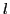
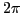
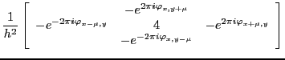

Local Fourier analysis (LFA) is known to be a valuable tool for the development of geometric multigrid methods for PDEs allowing an effective tuning of multigrid components. The main concept of LFA is the idea of keeping local stencils fixed and treating the (local) problems as if they where part of the associated infinitely large constant coefficient problems. This allows for an optimal choice of smoothers as well as restriction operators.
The infinitely large problem with constant coefficients corresponds to a (-level) Toeplitz operator. The Toeplitz operators are completely described by their generating symbols, i.e. (-variate) -periodic functions. For second order elliptic problems the generating symbol has a unique zero of order two at the origin. The multigrid methods for Toeplitz matrices and circulant matrices that have been developed in the last years work well for these problems, and they do not depend on the location of the zero. In fact, the zero of the generating symbol just influences the choice of the interpolation operator in the multigrid method.
Using these developments we are able to provide local interpolation operators for matrices with non-constant stencils with complex entries, consider e.g. the stencil
|  |
In this talk we will give a short overview over the used previous work, introduce the concept in larger detail and present some numerical results for the two-grid case.